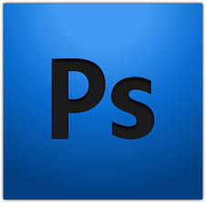

Programas usados
Visual Studio Code
Visual Studio Code es un editor de código fuente desarrollado por Microsoft para Windows, Linux y macOS. Incluye soporte para la depuración, control integrado de Git, resaltado de sintaxis, finalización inteligente de código, fragmentos y refactorización de código.Link

Gimp
GIMP es un programa de edición de imágenes digitales en forma de mapa de bits, tanto dibujos como fotografías. Es un programa libre y gratuito. Forma parte del proyecto GNU y está disponible bajo la Licencia pública general de GNU y GNU Lesser General Public License.Link
Adobe Photoshop
La creatividad está en cualquier parte y, ahora, Photoshop también. Las organizaciones pequeñas y medianas confían en Adobe Photoshop: el software de diseño gráfico e imágenes digitales de primer nivel está en el núcleo de cada proyecto creativo, desde la edición y composición de fotos hasta la pintura digital, la animación y el diseño gráfico.Link
Inkscape
Inkscape proporciona herramientas sofisticadas de dibujo vectorial con capacidades comparables a los estándares profesionales. Permite importar y exportar varios formatos de archivo, incluyendo AI, SVG, EPS, PS, PDF y PNG.Link

Brave Browser
Brave es un navegador web de código abierto basado en Chromium, creado por la compañía Brave Software en el año 2016, fundada por el cofundador del Proyecto Mozilla y creador de JavaScript, Brendan Eich.A partir de 2019, Brave ha sido lanzado para Windows, macOS, Linux, Android e iOS.
Audacity
Audacity es una aplicación informática multiplataforma libre que se puede usar para grabación y edición de audio, distribuida bajo la licencia GPLv2+. Es el editor de audio y sonido más difundido en las distribuciones Linux.Link

Git
Git es un software de control de versiones diseñado por Linus Torvalds, pensando en la eficiencia, la confiabilidad y compatibilidad del mantenimiento de versiones de aplicaciones cuando estas tienen un gran número de archivos de código fuente. Link

Github
GitHub es una forja para alojar proyectos utilizando el sistema de control de versiones Git. Se utiliza principalmente para la creación de código fuente de programas de ordenador. El software que opera GitHub fue escrito en Ruby on Rails. Desde enero de 2010, GitHub opera bajo el nombre de GitHub, Inc.Link

Sublime Text
Sublime Text es un editor de texto y editor de código fuente. Está escrito en C++ y Python para los plugins. Desarrollado originalmente como una extensión de Vim, con el tiempo fue creando una identidad propia. Aún conserva un modo de edición tipo vi llamado Vintage mode.Link